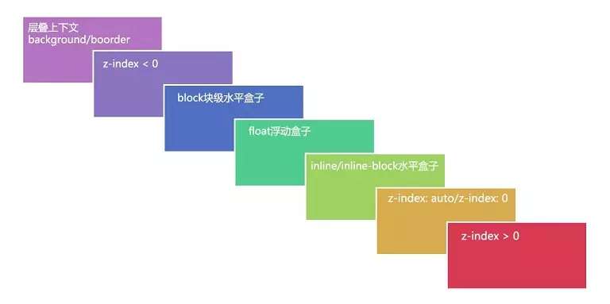

结构与层叠
前言
屏幕是一个二维平面，然而 HTML 元素却是排列在三维坐标系中，x 为水平位置，y 为垂直位置，z 为屏幕由内向外方向的位置，我们在看屏幕的时候是沿着 z 轴方向从外向内的；由此，元素在用户视角就形成了层叠的关系，某个元素可能覆盖了其他元素也可能被其他元素覆盖；相关源码在这里

内容
一、什么是“层叠上下文”
层叠上下文(stacking context)，是 HTML 中一个三维的概念。在 CSS2.1 规范中，每个盒模型的位置是三维的，分别是平面画布上的x轴，y轴以及表示层叠的z轴。一般情况下，元素在页面上沿x轴y轴平铺，我们察觉不到它们在z轴上的层叠关系。而一旦元素发生堆叠，这时就能发现某个元素可能覆盖了另一个元素或者被另一个元素覆盖。
如果一个元素含有层叠上下文，(也就是说它是层叠上下文元素)，我们可以理解为这个元素在Z轴上就“高人一等”，最终表现就是它离屏幕观察者更近。
二、什么是“层叠等级”
层叠等级(层叠水平,Stacking Level)决定了同一个层叠上下文中元素在 z 轴上的显示顺序的概念；
- 普通元素的层叠等级优先由其所在的层叠上下文决定
- 层叠等级的比较只有在同一个层叠上下文元素中才有意义
- 在同一个层叠上下文中，层叠等级描述定义的是该层叠上下文中的元素在 Z 轴上的上下顺序
三、如何产生“层叠上下文”
层叠上下文也基本上是有一些特定的 CSS 属性创建的，一般有 3 种方法：
- 根元素
<html></html> position值为absolute | relative，且z-index值不为autoposistion值为fixed | stickyz-index值不为auto的 flex 元素，即：父元素display:flex | inline-flexopacity属性值小于1的元素transform属性值不为none的元素mix-blend-mode属性值不normal的元素filter、perspective、clip-path、mask、mask-image、mask-border、motion-path值不为none的元素isolation属性被设置为isolate的元素will-change中指定了任意 CSS 属性，即便你没有直接指定这些属性的值-webkit-overflow-scrolling属性被设置touch的元素
四、什么是“层叠顺序”
层叠顺序(层叠次序，堆叠顺序，Stacking Order)描述的是元素在同一个层叠上下文中的顺序规则，从层叠的底部开始，共有七种层叠顺序：
- 背景和边框：形成层叠上下文的元素的背景和边框。
- 负 z-index 值：层叠上下文内有着负 z-index 值的定位子元素，负的越大层叠等级越低。
- 块级盒：文档流中块级、非定位元素；
- 浮动盒：非定位浮动元素；
- 行内盒：文档流中行内、非定位子元素；
- z-index:0：z-index 为 0 或 auto 的定位元素，这些元素形成了新的层叠上下文。
- 正 z-index 值：z-index 为正的定位元素，正的越大层叠等级越高；

五、z-index 的理解
z-index 只适用于定位的元素，对非定位元素无效，它可以被设置为正整数、负整数、0、auto，如果一个定位元素没有设置 z-index，那么默认为 auto;
元素的 z-index 值只在同一个层叠上下文中有意义。如果父级层叠上下文的层叠等级低于另一个层叠上下文的，那么它 z-index 设的再高也没用。所以如果你遇到 z-index 值设了很大，但是不起作用的话，就去看看它的父级层叠上下文是否被其他层叠上下文盖住了。
六、层叠准则
当元素发生层叠的时候，其覆盖关系遵循下面 2 个准则：
- 谁上谁上：当具有明显的层叠水平标示的时候，如识别的 z-index 值，在同一个层叠上下文领域，层叠水平值大的那个覆盖小的那一个。通俗讲就是官大的压死官小的。
- 后来居上：当元素的层叠水平一致、层叠顺序相同的时候，在 DOM 流中处于后面的元素会覆盖前面的元素。
参考资料
- 彻底搞懂 CSS 层叠上下文、层叠等级、层叠顺序、z-index
- CSS 中重要的层叠概念
- 深入理解 CSS 中的层叠上下文和层叠顺序
- 深入理解 CSS（Cascading Style Sheets）中的层叠（Cascading）
- CSS 的“层”峦“叠”翠 - 一文掌握 z-index 用法
- 《CSS 世界》
联系作者
平凡世界，贵在坚持。